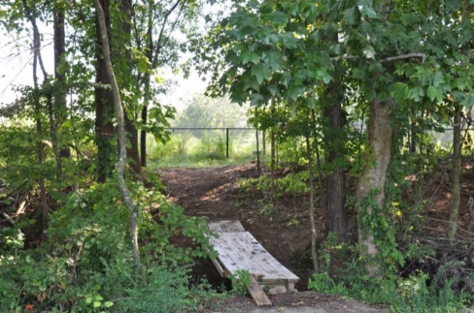
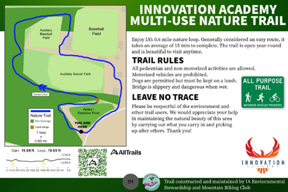

Chapter 4 Nature Trail
Created initially in 2022 by the Innovation Academy Environmental Stewardship and Mountain Biking Clubs, the nature trail is a mixed-use trail out behind the school which follows from the retention pond over a wooden bridge then to the auxiliary soccer field and back around.
The nature trail represents some of the most substantial environmental work done thus far at the school, and it’s been an extremely rewarding experience to see the trail grow and development over time.
4.1 Beginning
I began work on the trail volunteering with the Environmental Stewardship club to cleanup construction debris leftover from the demolition of old Milton Highschool. As we pulled up the metal pipes and discarded net, we found that the area would make an excellent nature trail, and Joaquin Freidman, Parker Grodi, and Wasim Alam began work designing the trail and planning out the route, though at this point the path was still extremely rough and not fit for a walking trail, let alone a mountain biking trail.
4.2 Bridge Construction
Later in spring of 2022 the Environmental Stewardship club began work on a bridge to gap the river between the retention pond and auxiliary soccer field. This process consisted of multiple steps:- Clearing out the area with branch cutters and pulling weeds and brush that was in the way of the bridge placement.
- Create the bridge out of 2x4s and stronger wooden posts.
- Digging holes for the wooden posts, making sure to work around roots encountered while digging.
- Pouring cement around the posts to ensure the bridge is sturdy.
- Once the posts are sturdy the bridge was affixed to the posts, and at last it was finished.

4.3 Refinement
Even after constructing the bridge the nature trail still needed work. We came back over the summer and conducted more landscaping, clearing out fallen branches and using them to better define the path. After some weed-whacking the trail started looking a lot better. It was finally something that could be used by the public.
Graphics were designed for a trail sign and a wooden post was designed to hold the graphic. Now it looked like a professional trail. This is essentially where we’re at today. Currently we’re looking into adding a doggy-bag station to make the trail more accessible to dog-walkers, as well as continuing to refine the upkeep of the trail.

4.4 Deeper Reflection
My favorite part of the trail is that it’s something that could be around for as long as IA, and even beyond that. It gives the Environmental Stewardship club an opportunity to give new members hands-on experience and help foster a passion for the environment through interacting with it directly. There’s not better way to communicate our own passions than by sharing it with others and letting it experience it for themselves.
The Mountain Biking Trail club currently holds some of the best underclassmen leadership and engagement, and it gives me hope for the future of the trail, and likewise the future of environmentalism within Innovation Academy.